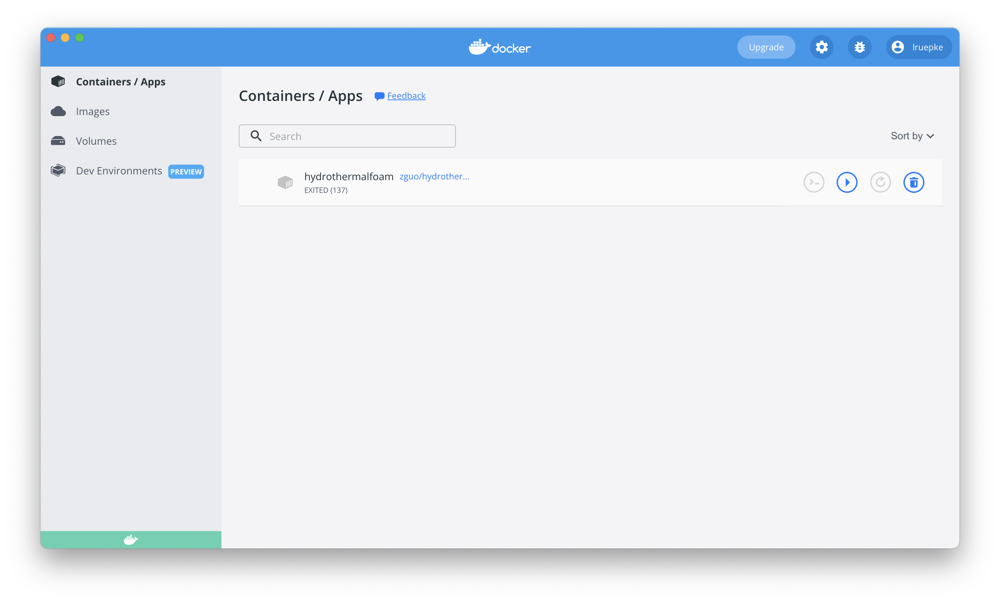

Installation guide
We will be using the Foundation version of OpenFOAM (version 10) and our own hydrothermal flow solver HydrothermalFoam, which is based on OpenFOAM. Everything you need for the class comes in one pre-configured Docker container:
OpenFOAM 10, built from source on Ubuntu 22.04 Linux
HydrothermalFoam with its solver
HTFoam, and xThermo, our implementation of the [Driesner & Heinrich, 2007] equation-of-state for the system H2O-NaClPython 3.12 with all packages we use in class (numpy, scipy, matplotlib, pandas, vtk, meshio, porespy, iapws, …)
JupyterLab and Visual Studio Code, which you use in your web browser
You only install two programs on your computer: Docker Desktop, which runs the container, and ParaView, which we use to look at the results.
Tip
Docker images are templates that contain an operating system with installed software. A container is a running instance of an image, a bit like a virtual Linux computer inside your computer. You can stop and restart it, and your files stay where they are.
Docker Desktop
Install Docker Desktop and start it. It needs to be running whenever you work on the class.
Optional: register an account at Docker Hub and log in from Docker Desktop. You can download the course image also without an account.
Tip
The course image needs about 8 GB of disk space. On Windows, Docker Desktop uses WSL 2; just accept the defaults during the installation.
ParaView
We will use Kitware’s ParaView to visualize the modeling results. Download and install the latest version for your computer. ParaView runs on your computer, not in the container, and opens the result files from your course folder.
The course container
Create a course folder on your computer, for example
HTF_coursein your home directory. Please do not use spaces or special characters in the folder name and in the path to it.Download the file
docker-compose.ymland save it into your course folder. It describes the course container.Open a terminal (Terminal on macOS and Linux, PowerShell on Windows), go to your course folder, and start the container:
cd HTF_course docker compose up -d
The first time, this downloads the course image, which takes a while. Afterwards, the container starts within seconds.
Open the two tools in your web browser:
Visual Studio Code: http://localhost:8080
JupyterLab: http://localhost:8888
Docker created a folder HydrothermalFoam_runs in your course folder. Inside the container, the same folder is /home/openfoam/HydrothermalFoam_runs. This is where all your work goes: everything you save there is directly visible on your computer (e.g. for ParaView), and everything you put there on your computer is visible in the container.
Warning
Only the files in HydrothermalFoam_runs are stored on your computer. Everything else in the container is lost when the container is removed (e.g. by docker compose down or when the course image is updated). So always work in HydrothermalFoam_runs.
Daily use
Run these commands in a terminal in your course folder:
docker compose up -d # start the container
docker compose stop # stop the container when you are done
You can also start and stop the container in Docker Desktop.

Fig. 1 Docker Desktop shows your images and containers.
Visual Studio Code
Working with OpenFOAM involves a lot of editing of text files and running commands in a Linux shell. We do both in Visual Studio Code, which runs inside the container and which you open in your browser at http://localhost:8080. It opens the folder HydrothermalFoam_runs.
Open a terminal with Terminal → New Terminal (or CTRL + `). This is a Linux shell inside the container, with OpenFOAM and HydrothermalFoam ready to use. All OpenFOAM commands in this class are typed in such a terminal.
Open a file in the editor by clicking on it, or from the terminal with
code filename.Python files and Jupyter notebooks also work in Visual Studio Code. The course Python is already selected.
Tip
You can also get a shell in the container from a terminal on your computer, without Visual Studio Code: docker compose exec htf bash
AI assistants (optional)
You do not need an AI assistant for this class. If you want to use one, there are two ways.
In the browser Visual Studio Code. The Visual Studio Code in the container installs extensions from Open VSX, where GitHub Copilot is not available. Other assistants are, e.g. Claude Code, Codex (OpenAI), Gemini Code Assist, or Continue, which works with many providers. Install one from the Extensions panel on the left and log in with your own account. Extensions you install yourself are kept when you stop the container, but are lost when it is removed or the course image is updated; you then simply install them again.
In Visual Studio Code on your computer, e.g. for GitHub Copilot. You can also connect a Visual Studio Code installed on your computer to the running course container. You then work inside the container just like in the browser version, but with all extensions of the regular Visual Studio Code, including GitHub Copilot. As a student, you can get Copilot for free through GitHub Education.
Install Visual Studio Code on your computer, and in it the extension Dev Containers (by Microsoft).
Start the course container as usual with
docker compose up -d.In Visual Studio Code, open the Command Palette (View → Command Palette, or CTRL/CMD + SHIFT + P) and run Dev Containers: Attach to Running Container…. Choose
htf.In the new window, open the folder
/home/openfoam/HydrothermalFoam_runs(File → Open Folder).Install the Python and Jupyter extensions in the container when Visual Studio Code suggests it, and select the course Python
/opt/htf-class/bin/pythonas interpreter (Python: Select Interpreter in the Command Palette).Install GitHub Copilot from the Extensions panel and sign in with your GitHub account.
Terminals in this window are Linux shells in the container, with OpenFOAM and HydrothermalFoam ready to use. Next time, File → Open Recent brings you back to the container directly, as long as it is running.
Note
AI assistants send your code and files to the company that runs them. Do not use them with data you are not allowed to share.
JupyterLab
JupyterLab runs inside the container as well; open it at http://localhost:8888. New notebooks use the course Python with all packages installed. Terminals in JupyterLab are Linux shells in the container, just like in Visual Studio Code.
Python
Python is already installed in the container with all packages we need in class: you do not have to install or activate anything. python in a terminal, notebooks in JupyterLab, and Python files in Visual Studio Code all use the same course environment.
If you need an extra package, install it with pip install <package> in a terminal in the container. Note that such packages are lost when the container is removed (see the warning above).
Test your installation
Open a terminal in Visual Studio Code and check that OpenFOAM and HydrothermalFoam are available:
echo $WM_PROJECT_VERSION # should print 10
which HTFoam
Then create a new notebook in JupyterLab (or a file hello.ipynb in Visual Studio Code), and run this code:
import numpy as np
import matplotlib.pyplot as plt
import meshio
x = np.linspace(0, 2 * np.pi, 100)
plt.plot(x, np.sin(x))
plt.show()
You should see a sine curve. If everything works, you are ready for the A first test case - heat diffusion.
Troubleshooting
“Cannot connect to the Docker daemon”: Docker Desktop is not running. Start it and try again.
“port is already allocated”: another program uses port 8080 or 8888. Stop it, or change the first number in the
portssection ofdocker-compose.yml(e.g."127.0.0.1:8081:8080") and open http://localhost:8081 instead.A new version of the course image: if we announce an update, run this in your course folder (your files in
HydrothermalFoam_runsare kept):docker compose pull docker compose up -d